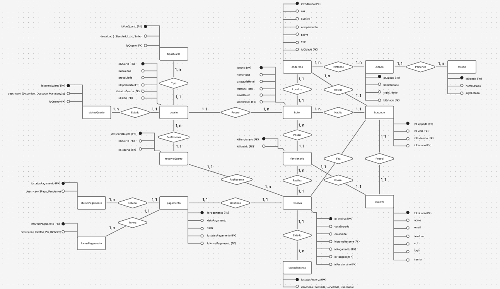

Código em Python de um projeto independente meu, para calcular horas e minutos

Tenho experiência como Empacotador no Da Praça Supermercados (desenvolvi habilidades com atendimento ao público e reagir sob pressão rapidamente,
organização e trabalho em equipe), e como Auxiliar de Perfumaria em CARLOS ANTONIO ESTRELA MARQUES DROGARIA (Realizar atendimento aos clientes, organização geral, vendas sob ecommerce e presencial).
Desenvolvimento e publicação de sites utilizando HTML, CSS e JavaScript, com versionamento de código através do GitHub. Aplicação de conceitos de layout responsivo, estruturação semântica e organização de navegação.
Desenvolvimento de aplicações em Python e Java com foco em lógica de programação e resolução de problemas práticos. Criação de um aplicativo em Python para cálculo de horas trabalhadas, automatizando operações de entrada, processamento e saída de dados. Em Java, desenvolvimento de um sistema de cofrinho utilizando programação orientada a objetos, com controle de valores e manipulação de dados.
Modelagem de banco de dados utilizando MySQL, com construção de diagramas Entidade-Relacionamento (MER) e transformação para modelo lógico. Aplicação de conceitos de normalização e estruturação de tabelas.
Utilização de diagramas de caso de uso para definição de requisitos e organização funcional de sistemas, além de contato com outras formas de modelagem de software.
Conhecimentos aplicados em segurança da informação com base no OWASP Top 10 e na LGPD, além de noções de redes, incluindo endereçamento IP, DHCP, VLAN e testes de conectividade.
